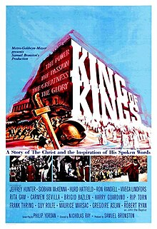
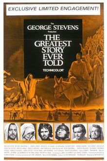

Course: Jesus in the Movies
Lecture #3: The Spectaculars: King of Kings (1961) & Greatest Story (1965)

KING OF KINGS:
For the first time since the 1927 DeMille production, the American public would again see the face of Jesus as Samuel Bronston produced his King of Kings. No one who has seen both films can ever call the 1961 version a remake as it is entirely different.
Nicholas Ray was chosen as director. He had done "Rebel without a cause" in 1955, a cult classic after James Deans premature death. Miklos Rosza again wrote the music as he did for both Quo Vadis and Ben Hur. Orson Wells served as the omniscient narrator.
Spain became the site of the production because Bronston had built enormous studios in Madrid so the Spanish countryside was the surrogate for Galilee and Judea. He also produced El Cid that same year (1961).
Show Trailor: 3:30mm
NOTE: Highlighted section is “Additional Material – Read only if Time & Interest Permit
AN ACTION DRAMA:
The movie begins with an overture, has an intermission, and is placed within the framework of world history--ancient and modern. It proceeds to a scene of legionaries marching toward Jerusalem under Pompey in 63 BC. The ancient texts referred to by the narrator are found in the writings of Flavius Josephus, not scripture.
However, one who listens carefully to the opening sequences will recognize allusions to important world events that occured between the 1927 film and this one. The holocaust of the Jews by the Germans during WW II, and the conflict between the Jews and Arabs after the 1948 establishment of the state of Israel.
Bronston has also subtly drawn a correlation between the world of antiquity and the modern world and led the viewers to identify not with the Roman oppressors but with the oppressed Jews.
Show opening sequences - @3 mm
BEFORE THE INTERMISSION we have, unlike the DeMille film, a reenactment of Jesus birth and infancy (Luke and Matt), Many of the best known episodes of Jesus Ministry prior to the passion week are shown including the baptism by John, the temptations in the wilderness, gathering disciples, the woman taken in adultery (John), and an extended Sermon on the mount, shown as a dialogue sermon as Jesus walks among his hearers responding to their questions.
Show -- Semon on Mt. 141/2 min
AFTER THE INTERMISSION: the film concentrates on the events related to the final days of Jesus Life. The entry into Jerusalem, an insurrection led by Barabbas (Luke 23:19), last supper, betrayal, trial before Pontius Pilate and appearance before Herod (Luke only), crucifixion, using 6 of the 7 words used.
The resurrection sequence includes the discovery of the empty tomb by Mary Magdalene, the appearance of the Risen Jesus to her and later to the disciples on the sea of Galilee (all from John). The last words of the movie, as in the DeMille film are "I am with you always even to the end of the world." (Matt)
There are expanded roles for several actors with no biblical basis in this film. The Roman Centurion, Barabbas Judas and Mary, Jesus’ mother.
The centurion Lucius is based on the one who proclaimed Jesus as the son of God at the cross. (Mk and Matt.) Tradition calls him Longus and the gospel of Peter calls him Petronius (Pet. 8:4). He has a large part in the movie, even leading the massacre of children in Bethlehem. He is involved from start to finish in the movie, a main character.
Judas is shown as a follower of Barabbas in the film, who becomes attracted to Jesus as a prophet of peace and joins his band of disciples. But Judas maintains an ongoing debate with Barabbas about the relative merits of non-violence verses violence. eventually disillusioned by the failure of Jesus' way of peace as a means to bring freedom he tries to force Jesus to use his miraculous powers to defeat Rome.
Mary, Jesus Mother is present at his baptism and maintains a home in Nazareth throughout his ministry being fully aware of her son's identity and mission. Mary Magdalene is shown as the woman taken in adultery and when she and John the Baptist visit her she speaks the parable of the lost sheep to her. Jesus returns for a last visit before going to Jerusalem and she seems to be aware of his fate before he is.
The role of Mary Magdalene has not been greatly expanded, the film exhibits the tendency--so obvious in the medieval tradition of the church--to make Mary Magdalene into a "penitent sinner" in contrast to the "virgin Mary".
This tradition is not accurate. There is every evidence that Mary Magdalene was first among Jesus' followers but was NOT either the woman taken in adultery or the woman who anointed Jesus feet. More positively, the Gospel of Mary portrays her as having received privileged teachings from Jesus, to the dismay of Andrew and Peter.
Show Final clip-appearance to Mary Magdalene & Disciples 31/2
THE PORTRAYEL: JESUS AS THE MESSIAH OF PEACE
Jesus was played by the 33-year-old Jeffrey Hunter. Whereas the souvenir book claimed many candidates were considered for the role, Hunter's widow (he died only a few years later) asserted that he was the only one who would take the part. Actors were wary of the Jesus role. She also said Hunter was deeply affected by his experience.
The film acknowledges in various ways that Jesus was a miracle worker. The narrator declares Jesus' day to be a "time of miracles". Miracles are shown, and Lucius reports to Pilate the feeding of the 5000, walking on water, stilling a storm, casting out demons, etc. However, the film omits the cinematically popular raising of Lazarus from the dead.
The film affirms Jesus was a teacher with the narrator declaring Jesus' day to be a "time of teaching". The Sermon on the mount, as mentioned, serves as a centerpiece for this dimension of Jesus ministry.
However, it is Lucius the Centurion who gives the definitive summary of what Jesus, and his message are all about. After the Sermon on the Mount, Lucius dutifully reports to Pilate what Jesus taught: “… peace, love, and the brotherhood of man."
It is in fact Peace and love that are the words most often associated with Jesus throughout the film. The emphasis on peace and love emerges in the midst of the traditional story of Jesus. All the traditional titles are there, but the title "The New Messiah of peace". proclaimed by the narrator--God--(Orson Wells) is the one for this movie.
The film pushes pacifism, upgrading humanism over human violence. It omits many confrontational scenes from the gospels. No cleansing of the temple, no armed struggle with the disciples, etc. Like Ben Hur, King of Kings 2 years later presents Jesus as so non-violent and non-threatening that they leave viewers wondering how such a nice guy ended up on a Roman cross.
Show clips: about half an hours worth to be decided. @ 25 mm
THE RESPONSE: A FILM WITHOUT HONOR
Bronston's film was the first commercially produced film in this country to tell the Jesus story in the harmonizing tradition, with the camera focused throughout on the Jesus Character, since the adoption of the Production Code by the film industry in 1930 and the creation of the Legion of decency by the Catholic Church in 1934.
Bronston's experience with the Legion of Decency shows why filmmakers had been reluctant to bring the Jesus story to the screen except as alternative stories.
The Legion refused to classify the film by any of its usual categories, but it received a special classification: Its inspirational intent was acknowledged but the poetic license taken in the development of the Life of Christ rendered the film theologically, historically, and scripturally inaccurate, according to the Legion.
The film was released (began showing in October 1961) during a period of the Cold war when it seemed most likely that the world would destroy itself. This was between the US backed "bay of pigs" in April 1961 and the Cuban Missile crises of October 1962.
Certainly, the Jesus portrayed in King of Kings appears as out of place in the post WW II world of power politics as he had in that earlier era.
The critical response, both secular and religious, was devastating. Even though Ben Hur had received accolades in 1959, critics seem to have developed not only an immunity from, but hostility toward, Hollywood extravaganzas with biblical subject matter. King of Kings bore the brunt of this hostility and ultimately became a box office failure, grossing less than its 8-million-dollar cost.
The secular press dubbed it "I was a teenage Jesus" and called it a bore, "a long, slow, static movie..."
The Christian Century said it would characterize the film as "the King James version of 'Gone with the Wind". Called the auburn-haired, blue-eyed Jesus a "true American" and a "good boy" because he visits his "Irish mother" before the crucifixion.
In the Jesuit weekly "America", Moira Walsh concludes the film was an endorsement of "secular humanism" or "the American way of life" under the guise of the Christian story. Not bad cinema, but bad theology.
Note From: Richie L. Allen
Subject: Jeffrey Hunter // Date: Tue, 18 Feb 2003 12:53:15 -0700
"In 1969, while filming "Viva America" in Spain, Jeffrey Hunter was accidently injured in an explosion on the set. Soon afterward he began complaining of dizziness and headaches. He was briefly hospitalized upon his return to Los Angeles and, shortly afterward, on May 27th, 1969 he suffered a cerebral hemorrhage (stroke) while on a stairway in his home. He fell and struck his head. He died during surgery to repair the skull fracture; Jeffrey Hunter was 42 years of age."
THE GREATEST STORY EVER TOLD (1965)

GEORGE STEVENS had made plans for a cinematic presentation of the Jesus story even before Bronston's movie. He had visited Israel looking for sites for his 10 million extravaganza. He discarded this for a number of reasons and ended up using the American west, especially the Glen canyon area of southern Utah. The Colorado river became the Jordon and the desert became the setting for a Jerusalem and the temple.
After much squabbling, accusations about unfair practices, etc., 20th century fox dropped the project, and United Artists became the distributer of the film which ended up costing about 20 million dollars. Only the title comes from the 1949 book by Fulton Oursler.
The poet, Carl Sandburg, then in his eighties moved to Hollywood in mid-July 1960 and over the next year and a half met with George Stevens and his staff to help clarify their vision of the film.
Max Van Sydow, the Swedish actor, was cast as Jesus. He was not well known to Americans but had been in many of Ingmar Bergman's films. The problem here was that so many actors and actresses that were Hollywood stars made cameos that Jesus had to compete with all these actors: John Wayne (the centurion), Pat Boone (the angel at the tomb), Angela Lansbury, Roddy McDowell, Dorothy McGuire, Sidney Poitier, Telly Savalas, etc. to name only a few.
Thus, Jesus had to compete with many stars but also the American landscape readily recognizable to moviegoers from countless "western' films. The mount of temptation becomes the mountain of temptation as Jesus struggles up the steep, sharp cliffs. The Sermon on the mount becomes the Sermon on the Mountain when Jesus addresses his disciples and crowds with his back to a precipice of several thousand feet.
Stevens clearly wanted to outdo his predecessor. It was longer, also with intermission, running at its longest at 260 minutes. The Stevens film appears more inclusive of specific stories and sayings from all four gospels.
However, while Bronston's King of Kings displayed the characteristics of an action drama with big fight scenes, Stevens approached his film with an avowed concern for ideas. As he said while on location: "We are doing simply the story of Jesus, with no interruptions for theatrical embroideries. Our contacts are with ideas rather than spectacle." he continued: "Our theme--compassion and man's humanity to man--is desirable to men of all faiths."
Ironically, his statements seem more appropriate for Bronston's film which, as stated, focuses on love and peace. Steven’s film has less frantic action.
Show trailer - Disk 2-3 min
A MEDITATION
The film opens in a church with the camera angled upward into the dome with frescos depicting scenes from the life of Jesus. As the camera comes down, the narrator opens with John's gospel..."In the beginning was the word, etc..." Then down to a fresco of Jesus bearing the cross with the Greek words "ego emi" I am he. Then to the image of Jesus who is Max van Sydow. Then into the birth scene and the title.
The film concludes by returning the viewer to the church. After the resurrection and Jesus ascending upward with the image dissolving into clouds. and the ending, "Lo I am with you always, even to the end of the world" Then back to the church the camera moves downward lighting on Max van Sydow painted on the wall.
Scene 32 – 5 min
He has four heralds blowing trumpets from the walls of Jerusalem with the transitions from heavenly life to earthly (birth), and back (resurrection).
Before the intermission most the familiar episodes from all four gospels are pictured including the resurrection of Lazarus which concludes the first act. After the intermission are those events that occur during passion week. Entry, cleansing temple, last supper, trial before both Caiaphas and Pilate and Herod. All seven words from the cross show how Stevens tried to include everything.
In Bronston's film, the devil is a disembodied voice at the temptations. In Steven's film, Satan is a major character, "the dark hermit" played by Donald Pleasance, and becomes a sinister presence throughout the film. He pops up all the time.
Show Scene 7: 6 min
In this film, as in John's gospel, it is the raising of Lazarus, not the cleansing of the temple, that becomes the precipitating factor leading to the final plot against Jesus. this ends act one as the Hallelujah chorus plays and people acclaim Jesus.
Scene 21-12min
After cleansing the temple there are two scenes that run counter to the gospels claims and defy historical possibility from the viewpoint of Life of Jesus research. Jesus returns to the temple after nightfall and preaches from the steps of the high alter, a speech right from I Cor 13 about faith, hope and love.
Scene 23-6 min
When Judas in remorse wants to die, he very unscripturally returns to the temple courtyard deserted by the priests and crowds and at the very moment a nail fixes Jesus' hand to the cross, Judas casts himself into the flames of the alter of sacrifice --as a burnt offering, a holocaust. - Scene 30 2min
THE PORTRAYAL: JESUS AS INCARNATE WORD
Throughout the film, Jesus appears unmistakably as the fulfillment of the Davidic messianic hope of Israel and he clearly understands himself to be the fulfillment of the hope for a messiah. It is precisely Jesus' perceived and self-claimed fulfillment of the messianic hope that leads to his difficulties with the authorities.
The film ultimately places the responsibility for Jesus' death on that shady character identified as the "dark hermit". That is, The devil made 'em do it.
More than any other Jesus film, this movie moves under the influence of the gospel of John. Throughout the film Jesus repeatedly refers to the world as that which, in some sense, stands over against God and into which he has come with "light" and "life" and "love". Along the way he uses many of the "I am" sayings from John: Bread, resurrection and life, way truth and life, and at the last supper "love one another".
This film is not about a Jew who was Christ but about Christ who happened to appear in first century Palestine as a Jew. Tho Stevens, both personally and professionally, was sensitive to the issue of antisemitism (some of his photos are in the national holocaust museum) he implies that Christianity was in the process of superseding Judaism, at least the cult of the temple. In his night time sermon from the alter, it seems quite clear that Jesus has replaced the temple as the avenue to God.
This film is not just other-worldly, but anti-worldly. This is not the merrymaking Jesus but Van Sydow with his northern gothic look, looks dour and pained. The anti-worldliness in the film, and Jesus' teachings, has to do with the repeated counsel against a comfortable life made possible by the "stuff" of the world. The "dark hermit" serves as a spokesman for this life of ease.
THE RESPONSE: ANOTHER FILM WITHOUT HONOR
Unlike Bronston's film in 1961, this film received an A-I classification from the Legion of decency--morally unobjectionable for all ages. Later in 1965, the Legion of decency became the National Catholic Office of motion pictures (NCOMP) reflecting the Vatican II reforms.
When Greatest Story opened no less than 5 supposedly independent, movie reviewers suggested that the film had the appearance of a series of Hallmark greeting cards. this was not meant as a compliment and ultimately Steven's film, which also ran 20 million to make, received little honor in its own day and became a loser at the box office. Hollywood would not risk this much money on a Jesus film again
Secular critics labeled it a disaster the problems being: the slow pace, distraction of familiar actors, shifts in dialogue from King James to American English.
Ironically, Moira Walsh of America who had really disliked the Bronston film, really liked this movie. Others felt it was the best effort at bringing the story of Jesus to the screen.
THE CHRISTIAN CENTURY reviewer, alone it seems in his view, picked up on the emphasis in the film on detachment from the world. he said "this films insistence on the otherworldliness of Jesus undercuts a widely shared contemporary understanding of the gospel.”
Apparently, just as the Catholic reviewers had found in the film a reverence for Jesus congenial to their theological points of view, so the protestant reviewer centered on a theological perspective that saw the depiction of Jesus as irrelevant to the contemporary protestant understanding of him. i.e., the "social gospel"
This movie premiered at the height of the civil rights struggle--one month before the march from Selma to Montgomery, Alabama in the spring of 1965. This was also a time of growing opposition to Viet Nam. Thus, it’s no wonder that the other worldly Jesus seemed out of sync for many persons involved in the struggles for social justice at home and abroad.
In spite of this, Max Van Sydow was very much appreciated as Jesus, in great contrast to Jeffrey Hunter's portrayal 4 years earlier. possibly because of his association with Bergman.